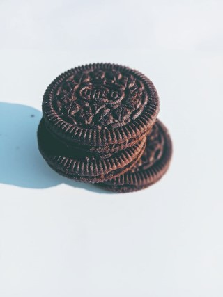
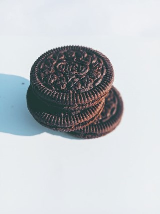

Cookies
Cookies make life better. They are small hand-held bites of happiness. I bake cookies when I have a chance.
Image from https://www.pexels.com/photo/delicious-cookies-with-sweet-filling-6009631/
I like food sdalkfdaslfsa;ldf
Cookies make life better. They are small hand-held bites of happiness. I bake cookies when I have a chance.
Image from https://www.pexels.com/photo/delicious-cookies-with-sweet-filling-6009631/
Pizza is the ultimate meal. It can be for breakfast, lunch, dinner, snack, or dessert. It's simple to make, hard to master. I really like how you do not need a fork to eat it.